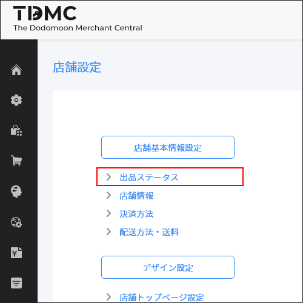
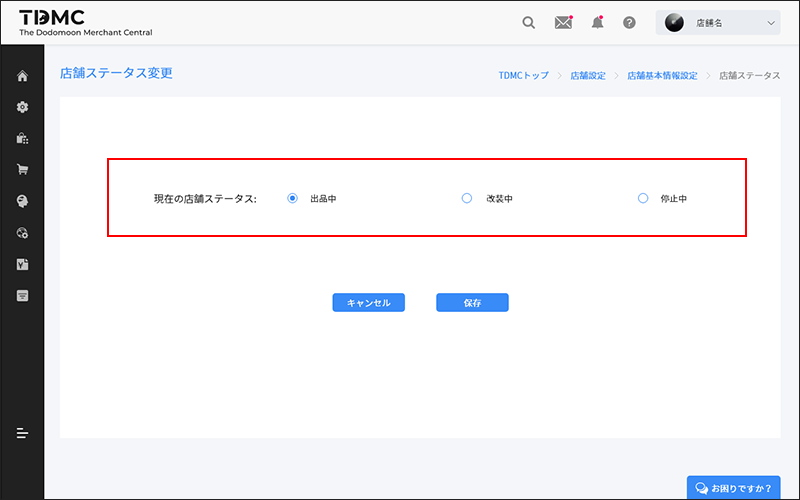
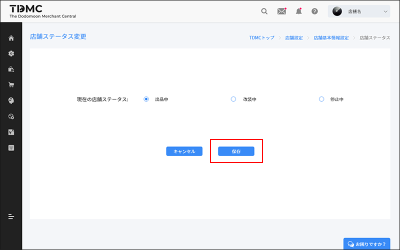

ここでは、[店舗ステータス変更機能]を用いて、お客様がお店にアクセスできる[出品中]と、アクセスできない[改装中]を切り替える方法についてご説明します。

ユーザーにご案内する店舗情報は、[出品ステータス]の編集画面から確認、編集できます。
TDMC[店舗設定]から[店舗基本情報設定]の中[出品ステータス]に遷移し、編集してください。
STEP1 店舗名ステータス変更依頼画面を開く
現在のステータスを確認し、変更を行ってください。アクセスできない[改装中]/[停止中]を切り替える方法について説明します。
[店舗設定]から[店舗基本情報設定]の編集メインメニューの[出品ステータス]をクリックします。通常は出品中となっているので、改装中にしたい場合は[改装中]/[停止中]をチェックします。

STEP2 変更したいステータスを選択し、[保存]ボタンをクリックする。

変更完了
店舗ステータスとは、店舗の状態を指します。大幅なリニューアルや、商品の入れ替え、価格の大幅見直しなどで一時的にお客様にアクセスしていただきたくない、お買い物をしていただきたくない時に[改装中]に変更して作業を行います。
家族の急病、悪天候、休暇など、何らかの理由で注文の出荷ができない場合は、出品ステータスを[停止中]に変更できます。